EasyTouch在使用时有自带的旋转或是移动方法，这些方法只能在简单的人物移动中使用，如果场景比较复杂，存在很多碰撞体体积很小的物体，而且人物移动很快时，就会出现人物穿墙等不好的效果，而且EasyTouch插件使用的监测方式是Update，在帧率很低的电脑上会出现缓慢的情况
为了解决上面出现的问题我们可以写一份自己的旋转或是移动方法，EasyTouch的旋转使用的是触控板，移动使用摇杆，摇杆和触控板基本一样，只需要调用其方法内的axisX.axisValue或axisY.axisValue就能获取到对应的x或是y的值，摇杆以组件的正中心为(0,0)点。而触控板则是以鼠标或手指落点为正中心(0,0)点
通过获取摇杆得到自己的移动方法
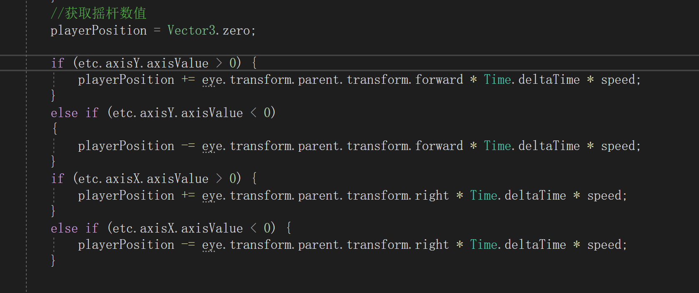通过获取触控板得到自己的旋转方法
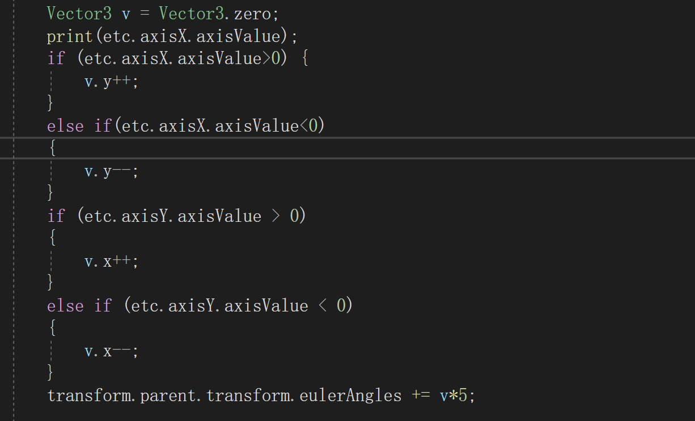在做第三人称游戏时，人物模型的移动想要像崩坏3那样，按摄影机方向为准，而不是模型方向则需要一个转换，首先是一个对象，这个对象要与摄影机一个方向，而且这个对象不能是摄影机，因为摄影机需要旋转会影响x轴造成方向上的错误。
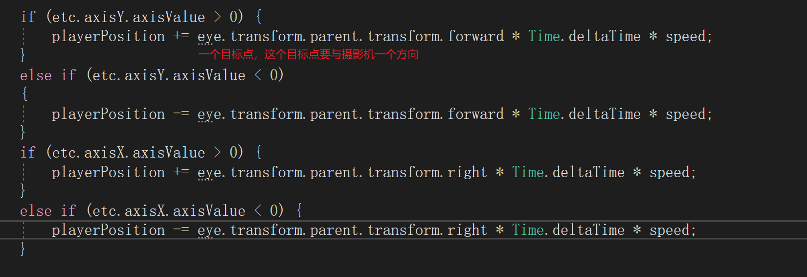这里我使用的是eye作为我的方向基准。这一步还只是得到了一个方向，并不是移动的坐标。还需要进行下一步的转换。
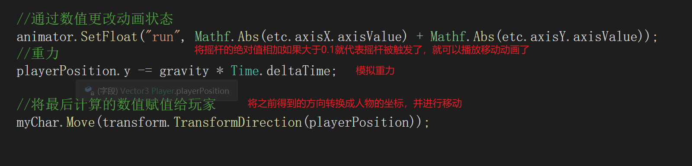这里采用的是TransformDirection方法，他可以将一个方向转换成当前对象的一个坐标。
转换成坐标后再通过人物控制器的Move方法进行移动。
退出游戏功能实现
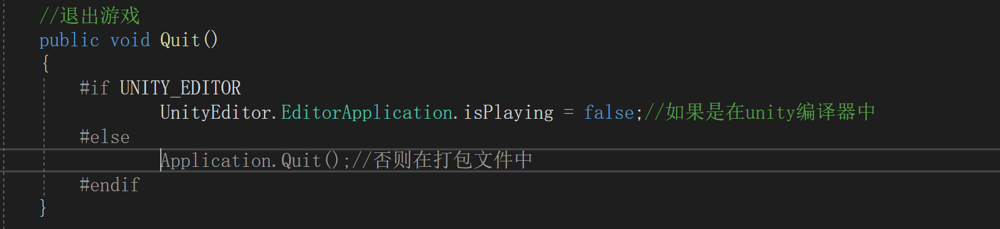正常情况下需要一个类继承了MonoBehaviour类才能被挂载到Unity对象上
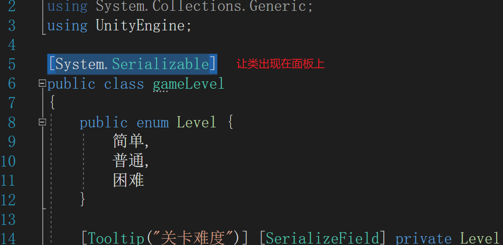如果一个类被打上这个标记那么这个类虽然不能被挂载但能出现在面板上（需要其它类创建了它的对象）
适用于Scene Space-Camera模式下的画布
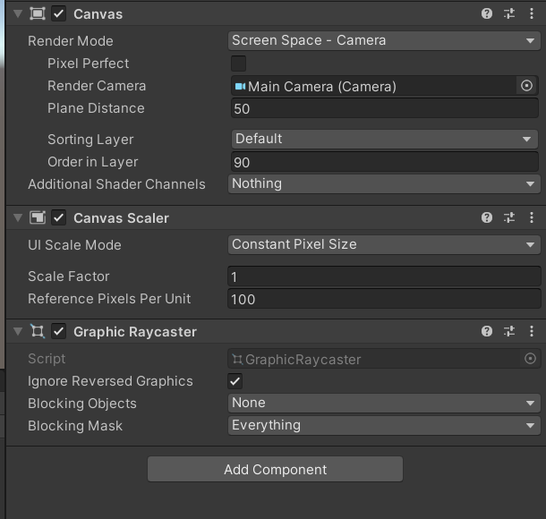这种模式下画布处于世界坐标
而鼠标处于屏幕空间坐标
当画布上的一个游戏物体想要朝向鼠标位置时就可以使用
RectTransformUtility.ScreenPointToWorldPointInRectangle(画布,屏幕空间坐标,当前使用的摄影机,out 返回转换后的结果);
这样就能把一个屏幕空间坐标转换为一个画布上的坐标
当坐标转换完成后还要计算两个坐标的夹角
Vector3.Angle(当前前方,目标方向)
这个方法可以计算出两个向量间的夹角
最后通过Quaternion.Euler(x,y,z)方法就可以计算出最后旋转的坐标
完整代码
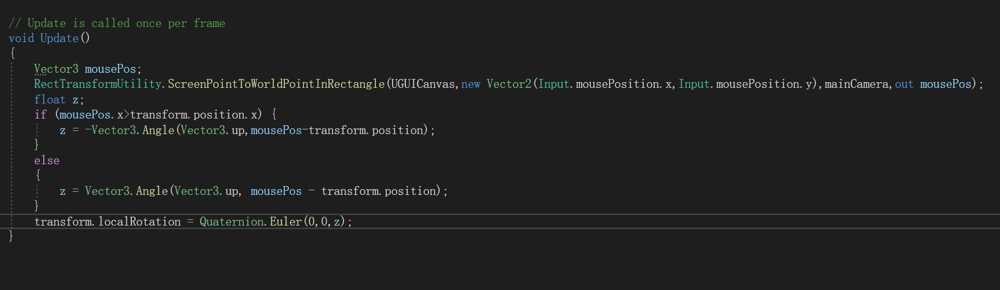数据持久化需要用到流，而且被持久化的方法不需要继承MonoBehaviour类。但需要在类上加上[System.Serializable]属性。
这里的处理流时使用了using(流){处理方法}。这样子写可以不用释放资源，如果不同using处理这需要在末尾释放流资源。
持久化之前需要创建好一个文件流用于存储持久化数据，同时也需要创建一个持久化类BinaryFormatter类。
最后要将将用于持久化的数据流和类传给BinaryFormatter.Serialize(流,类)。
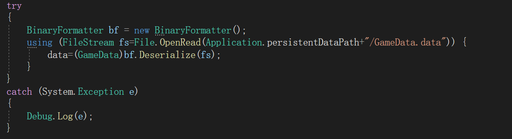反序列化也一样，需要通过BinaryFormatter类来处理，同样也需要流，通过流读取存储的序列化数据。
通过将流传给BinaryFormatter.Deserialize(流);进行处理，最后还要将处理后的结果通过强转的方式转换为原来的类型。
这个比较简单直接通过Screen.width和Screen.height获取就行
通过Application.platform来判断。RuntimePlatform是个枚举类型
这里在menuName后面填上名称后就能通过鼠标右键在文件夹中创建一个对应的配置文件。配置文件结构和类一致。
首先是需要一个方向，通过目标方向减去当前方向获得一个方向向量。
再通过Quaternion.LookRotation(方向)方法得到这个向量的旋转信息，此方法返回一个四元数，将四元数直接赋值就能让当前物体看向目标方向。
但是这样得到就是一瞬间的旋转。如果是用来做人物或其他物体的旋转效果就不是很好。
所以这里又需要另一个方法Quaternion.Lerp(起始角度,目标角度,插值)
这里的插值范围是0到1，越大越快
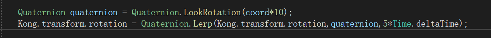1.首先是要在Windows选项中选择Window>>2D>>TilePalette
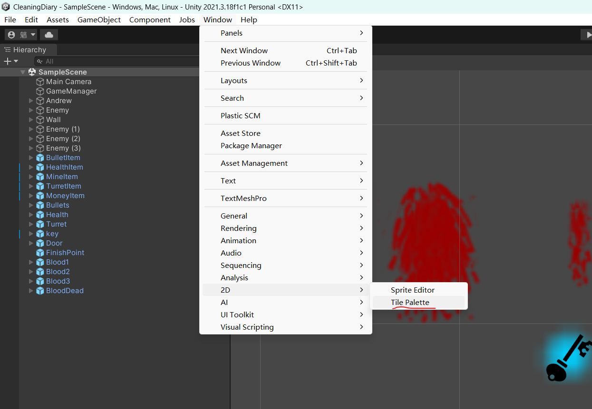2.然后在Hierarchy面板中创建Tilemap,这里的Tilemap种类很多，挑选一个适合的用来绘制场景
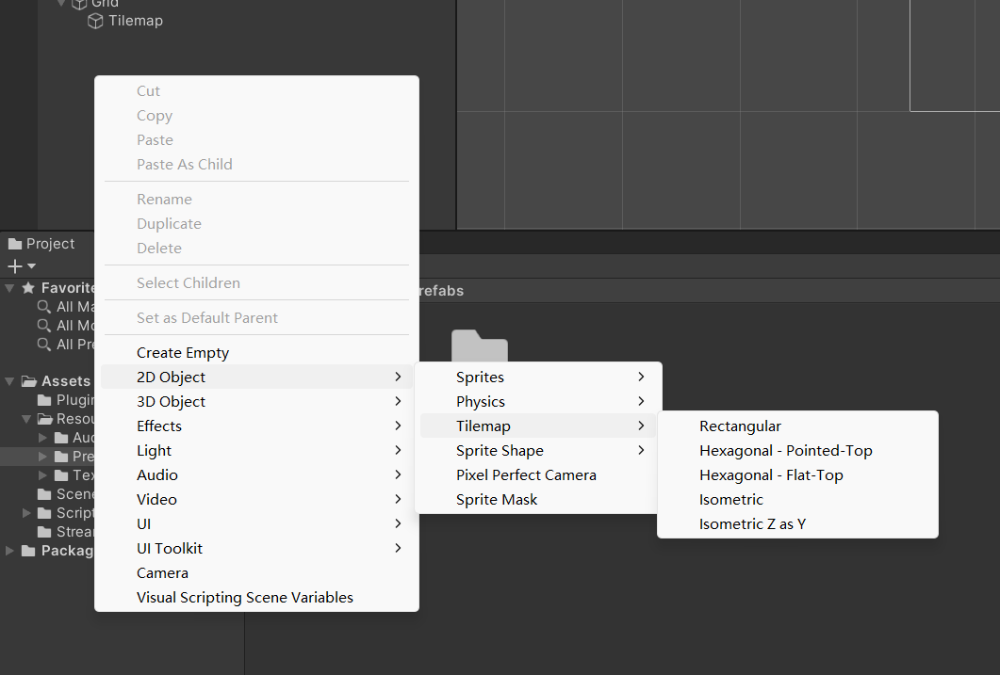3.再通过TilePalette的CreateNewPalette来创建调色板
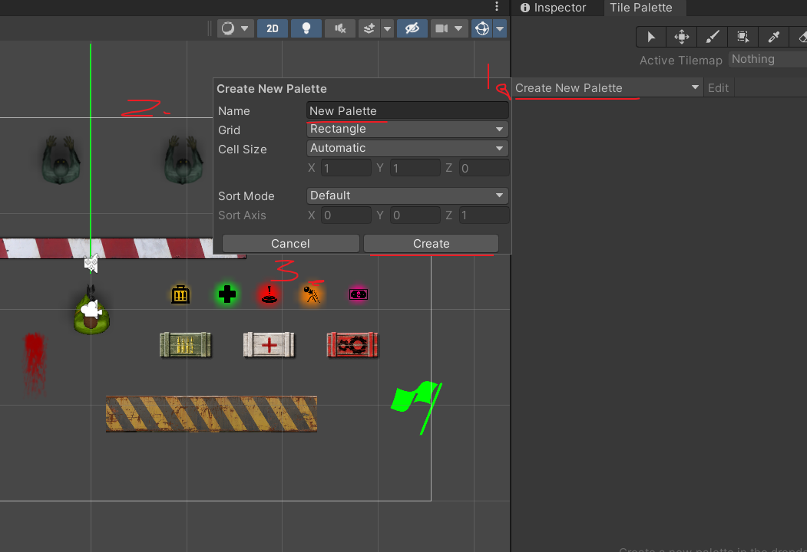4.将绘制用的图片拖入TilePalette面板中就能创建素材。
5.先点击画笔，再通过画笔点击素材就能将素材选中，之后就能通过鼠标在画布上进行地形绘画。
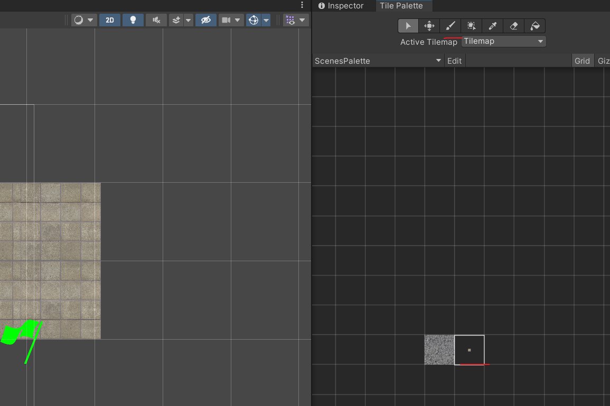6.而通过点击选择箭头，再点击素材就能修改素材的参数。
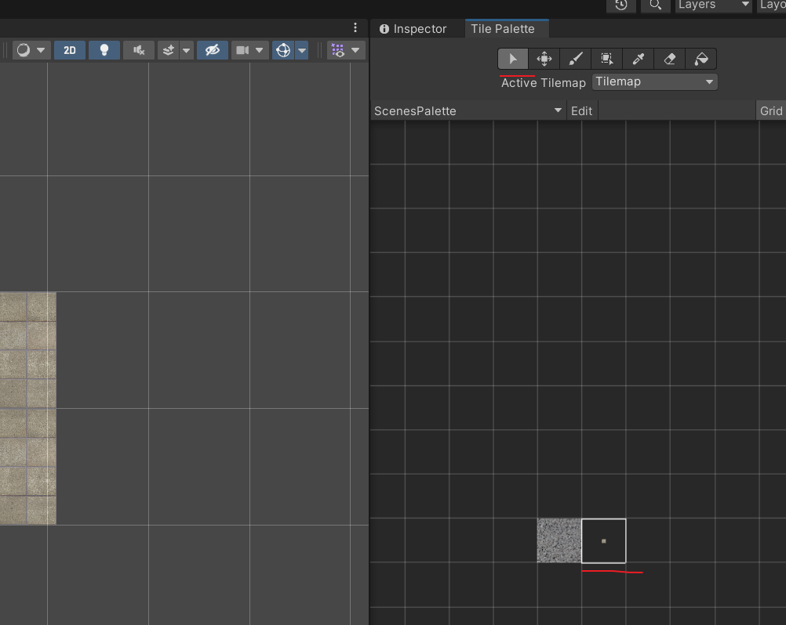通常情况下，我们需要设置很多画板，应为地形不可能只有一种，例如现在就有地板和墙。需要分开绘制，所以需要创建两个画板，但两个画板重叠的地方就会出现问题。unity不知道先绘制地板还是墙，我们就可以选中画板然后在Inspector面板中设置层级。
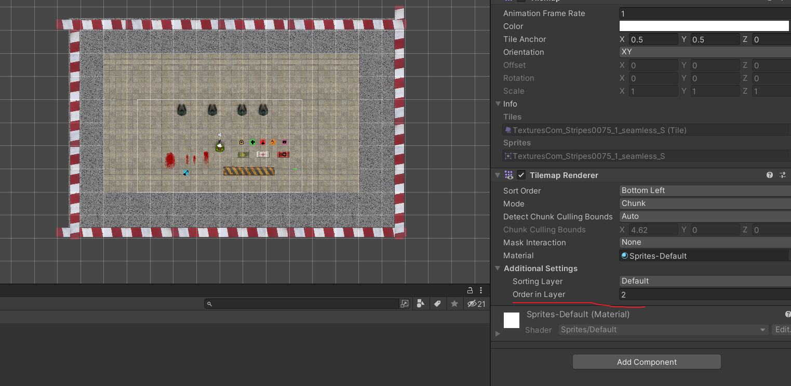绘制好了墙，我们还需要将墙添加上碰撞器
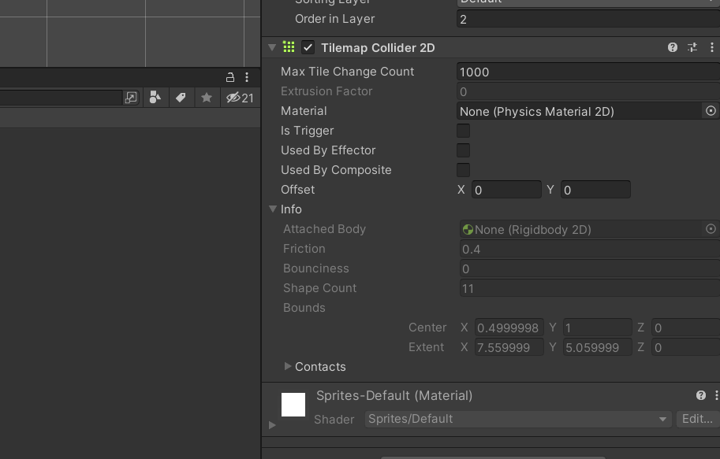有了碰撞器后就会发现很多地方是连接的，但是碰撞器会重复绘制，例如重叠的几个墙角，都会重复绘制碰撞器。
可以为其添加上CompositeCollider2D组件，再将TilemapCollider2D组件的UsedByComposite勾选上，就可以将所有叠加在一起的碰撞器连接成一个碰撞器。
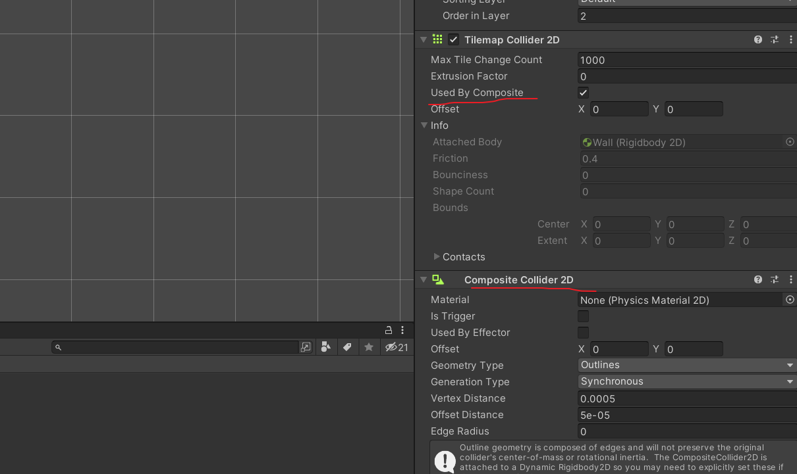在Unity中，Assets文件夹是项目中最重要的文件夹之一，用于存储游戏中使用的各种资源。除了Assets文件夹，还有一些其他的关键文件夹，具体如下：
Assets/Editor：存储自定义的编辑器脚本和编辑器扩展。
Assets/Plugins：存储第三方插件和库，如dll文件、native插件等。
Assets/Resources：存储非场景资源，如Texture、AudioClip、Sprite等。
Assets/Scenes：存储场景文件，即包含游戏对象和组件的场景。
Assets/Scripts：存储所有的脚本文件，如C#、JavaScript、Boo等。
Assets/StreamingAssets：存储需要直接访问的数据，如视频、音频、配置文件等。
Assets/AddressableAssetsData：存储Unity Addressable Assets系统的关键数据和配置文件，包括地址化资源组、资源加载规则等。
Assets/Gizmos：存储自定义的Gizmo图标，用于在编辑器中显示游戏对象的外观。
Assets/Editor Default Resources：存储Unity Editor中使用的一些默认资源文件，包括内置图标、布局、颜色等。
需要注意的是，这些文件夹并不是完全固定的，开发者可以根据自己的项目需求创建和管理自己的文件夹，以方便组织和管理项目中的各种资源。